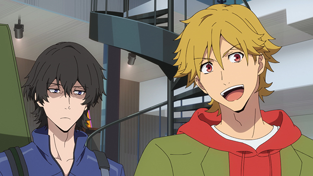
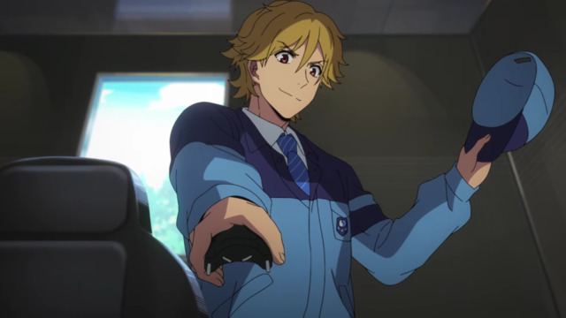
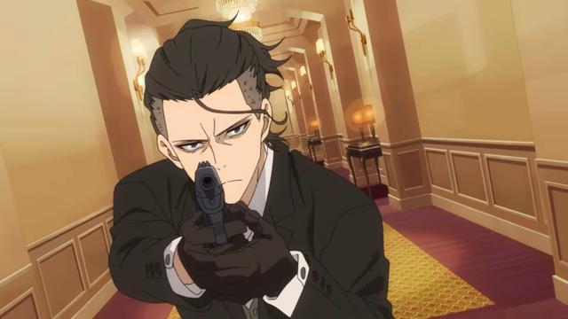
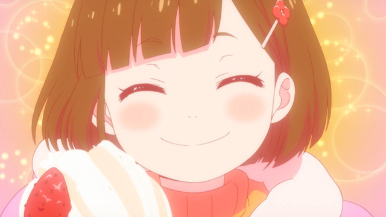

• Buddy Daddies é uma série de anime original que mostra a vida de dois amigos espiões que acabam morando juntos.
• Produzida pela Aniplex e Nitroplus, a obra tem uma animação linda e uma trilha sonora incrível, causando muitas emoções.
• Kazuki Kurusu é um ótimo espião. Ele obtém informações e se encarrega de organizar e realizar os serviços. Em seu tempo livre, ele gosta de cozinhar, limpar, jogar e sair com mulheres.
• Rei Suwa é um assassino silencioso, mas tem forte habilidade física, além de um tiro excepcional. Ele é um recluso que passa praticamente todo o seu tempo livre jogando videogame.
• Durante uma missão, a dupla acaba sendo surpreendida por uma criança que não deveria estar no local. Então, os dois protegem a menina e a levam para casa, já que a mesma presenciou os assassinatos cometidos por eles naquela noite de Natal.
• Miri Unasaka é uma vibrante e corajosa criança de quatro anos, que é simplesmente uma gracinha, coisinha mais lindinha 🤏 🤏 🤏.
